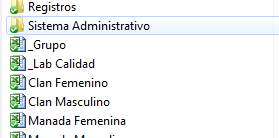
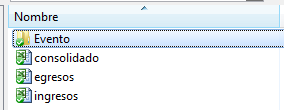

Debemos tomar cada evento como una administración independiente, con sus propio presupuesto, ingresos, egresos, donativos en especies, y lóicamente con su Informe Administrativo individual.
Lo primero que debemos hacer es buscar en el Dropbox de nuestro Grupo, allí mismo donde llevamos el TURCO, la carpeta que se llama Sistema Administrativo.
Luego de pulsar sobre ella tendremos los archivos con que trabajamos la administración de nuestro Grupo... también podemos ver una carpeta que se llama Evento, alli están los archivos para administrar actividades.
Dentro de la carpeta Evento, hay 5 formularios interrelacionados entre si, con los cuales podemos administrar cualquier actividad o evento, grande o pequeño.
Importante:
Recomendamos ampliamente hacer una copia de este directorio completo para cada evento que se vaya a realizar. Conservando siempre los archivos originales en blanco.
Como Reportar
El Sistema permite un monitoreo constante del avance de la gestión administrativa, por parte del Administrador del Evento; pero esto no es suficiente para cumplir con lo estipulado en este sentido.

En vista de los antes expuesto, es muy recomendable que se imprima una copia de cada uno de los formulario de control (se puede obviar el presupuesto), y con ellos se haga un informe administrativo de la actividad o evento.
Esta información debe estar a la disposición de las personas que estén relacionadas con el manejo de dinero y/o aporte de dinero. Como por ejemplo: Jefe de Grupo o Unidad, Empresas Patrocinantes, Padres y Representantes, etre otros